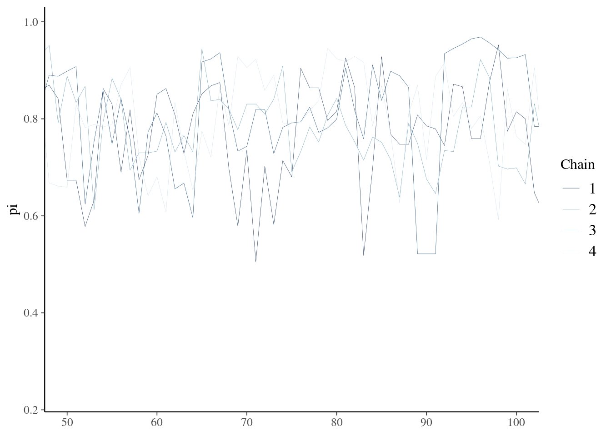
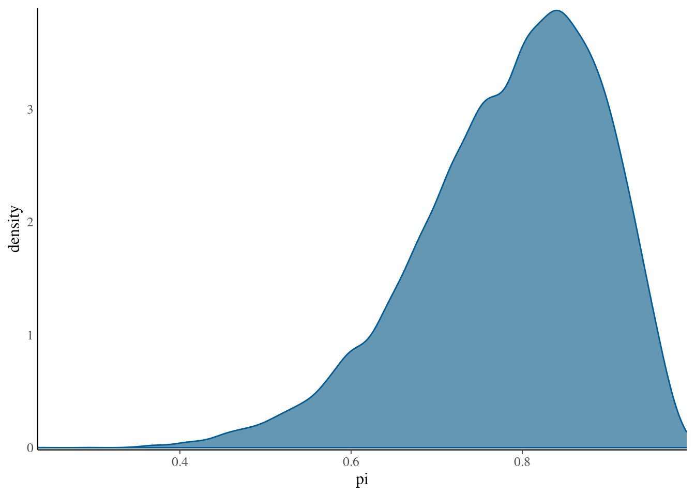

6.5 Beta-Binomial (MCMC)
# define model in stan language
bb_model <- "
data {
int<lower = 0, upper = 10> Y;
}
parameters {
real<lower = 0, upper = 1> pi;
}
model {
Y ~ binomial(10, pi);
pi ~ beta(2, 2);
}
"
# use stan to simulate posterior
bb_sim <- stan(model_code = bb_model, data = list(Y = 9),
chains = 4, iter = 5000*2, seed = 84735)Uses 4 chains and 10000 samples of which 1/2 are discarded by default for burn-in
Result is a stanfit object, which can be used to extract the samples
# for examining using view
chains <- as.data.frame(as.array(bb_sim, pars = "pi"))
# look at a zoom in of the sample trace
mcmc_trace(bb_sim, pars = "pi", window = c(50,100),size =0.1)
Trace shows the samples exploring the parameter space but also illustrates non-zero autocorrelation.
We can also plot the resulting distribution of samples (book shows that this is close to beta-binomial expected)
mcmc_dens(bb_sim, pars = "pi") +
yaxis_text(TRUE) +
ylab("density")